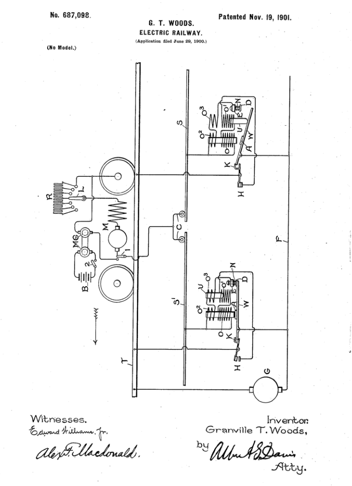
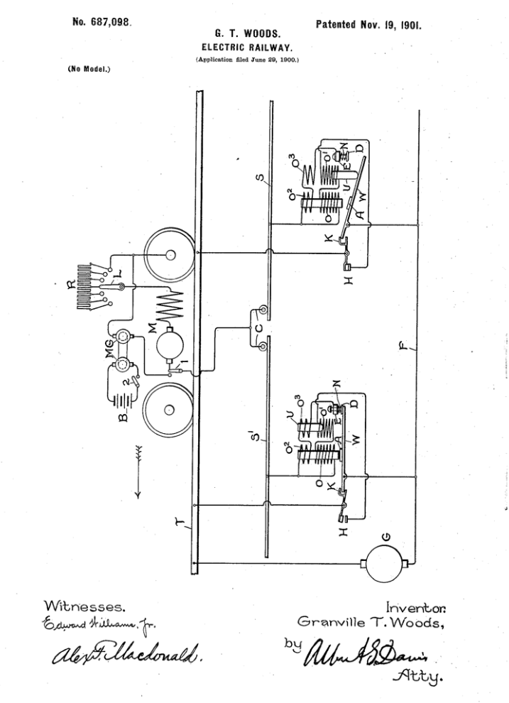
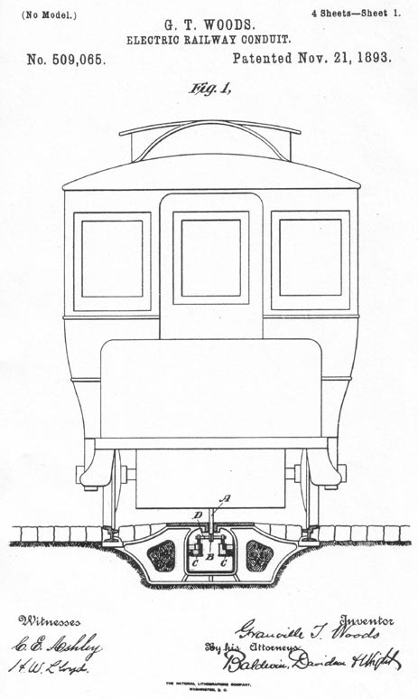
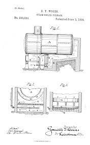
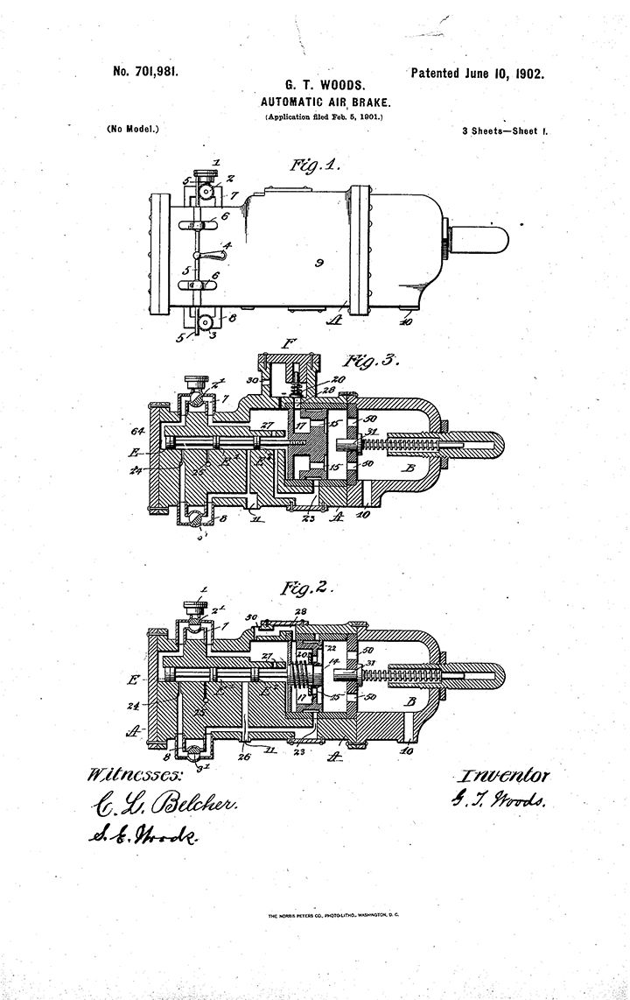

Multiplex Telegraph
Woods developed a device called the "telegraphony" in 1887, which allowed voice and telegraph messages to be sent over the same wires simultaneously. This invention significantly improved long-distance communication.

Multiplex TelegraphWoods developed a device called the "telegraphony" in 1887, which allowed voice and telegraph messages to be sent over the same wires simultaneously. This invention significantly improved long-distance communication.  |
Electric Railway Conduit SystemWoods designed a system for powering streetcars by electricity through overhead wires. His system was safer and more practical than earlier designs.  |
Improved Steam Boiler FurnaceWoods patented an improved steam boiler furnace that increased the efficiency of steam engines and reduced fuel consumption.  |
Automatic Air BrakeHe also contributed to the development of an automatic air brake system for trains, enhancing their safety and efficiency.  |
Woods held more than 60 patents during his lifetime, making significant advancements in electrical engineering and telecommunications. His inventions played a crucial role in modernizing the railroad industry and improving communication systems. Although he faced racial discrimination throughout his life, his work laid the foundation for many technological advancements in transportation and communication.